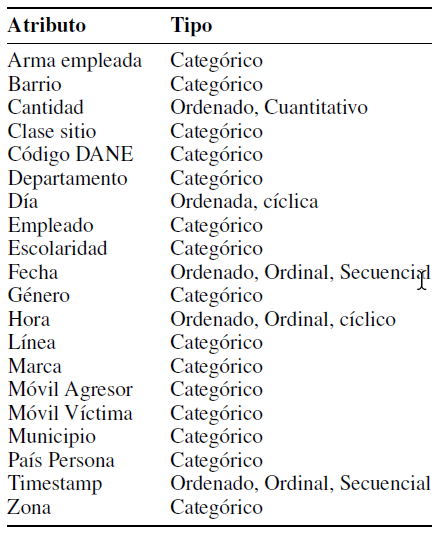

Te has preguntado...
¿Cuál es el barrio de Bogotá con mayor índice de hurto de celulares?
¿Cuál es el arma o método preferido por los amigos de lo ajeno?
¿Cuál es el medio de movilización preferido por los ladrónes?
¿Las víctimas son en su mayoría mujeres o hombres? ¿En qué rango de edades?
... quieres conocer las respuestas?
What
Dataset: Delito de hurto a celular en la zona urbana de Bogotá.

Why
Permitir al usuario explorar los datos y descubrir características de su interés
Descubrir características interesantes sobre el hurto de celulares a partir de:
- Ubicación (barrio)
- Año
- Día de la semana (lunes, martes, miércoles, etc.)
- Género (masculino, femenino)
- Rango de edad
- Arma empleada y móvil del agresor
- Temporalidad (mes, semana, día)
Insights
- En el año 2010 hurtaban más celulares a hombres que a mujeres,
sin embargo se identifica que año tras año las cifras de hurto a
mujeres han aumentado y para el año 2016 la cantidad de hurtos
son similares entre ambos géneros.
-
Los hombres son más propensos a ser atacados con arma blanca
en el evento de hurto.
-
La mayoría de personas a las que les hurtan su celular utilizando
un arma de fuego, son hombres.
-
Los barrios de la zona de chapinero y zona centro son los que
presentan mayor cantidad y frecuencia en el hurto a celular.
-
En el modismo temporal por semana se evidencia una estacionalidad en Semana Santa, siempre se reducen la cantidad de hurtos.
-
Antes robaban más entre 25 y 35 años, ahora entre 20 y 30 años.